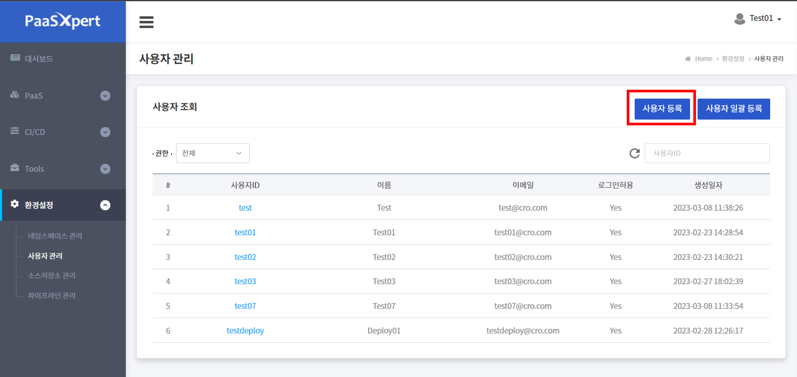
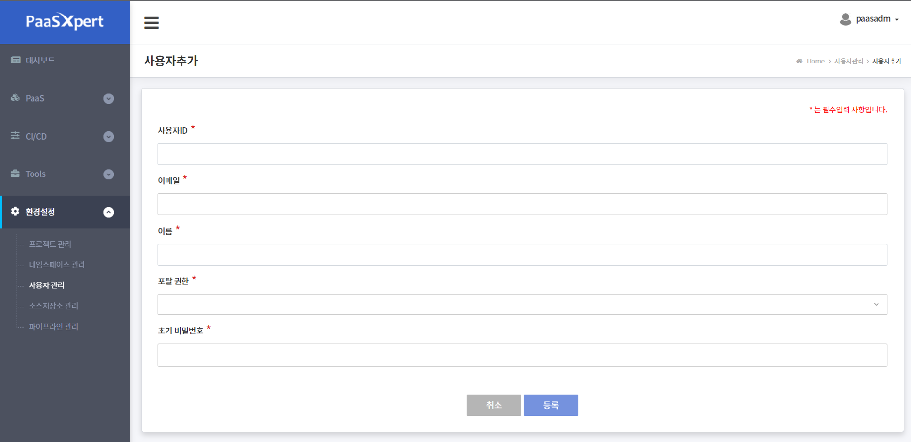
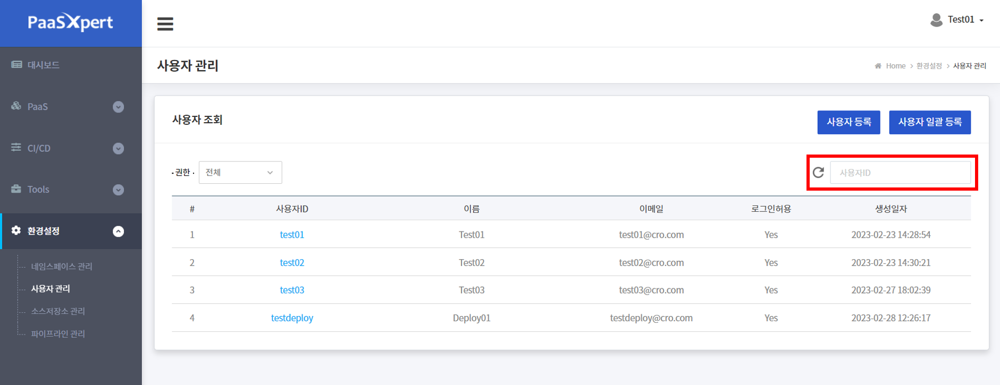
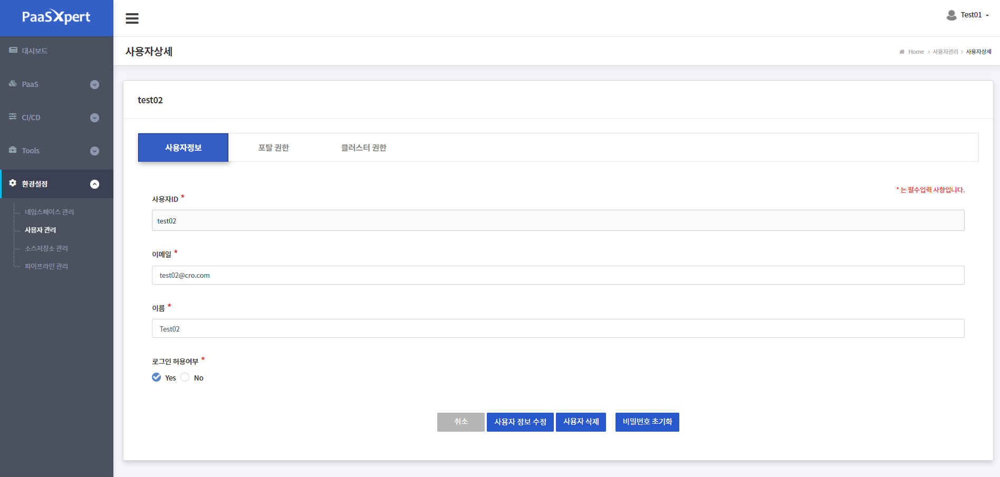
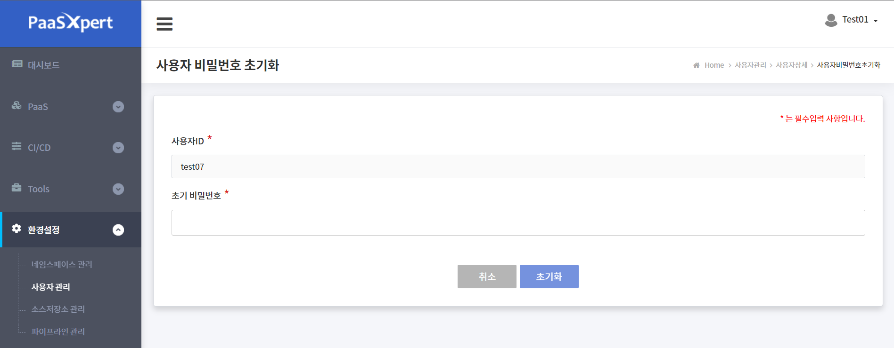
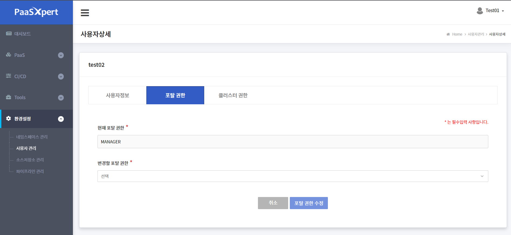
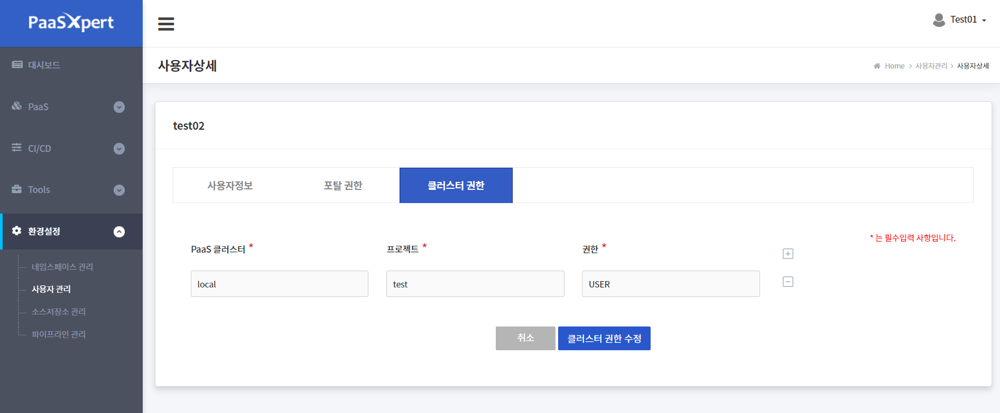
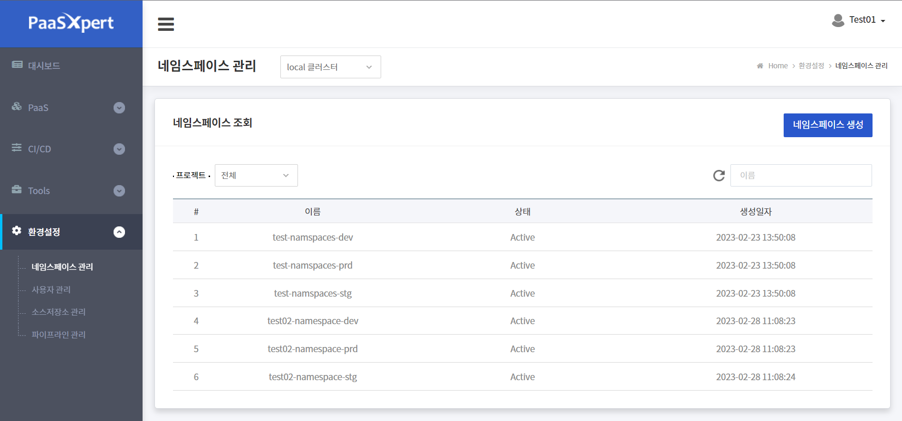
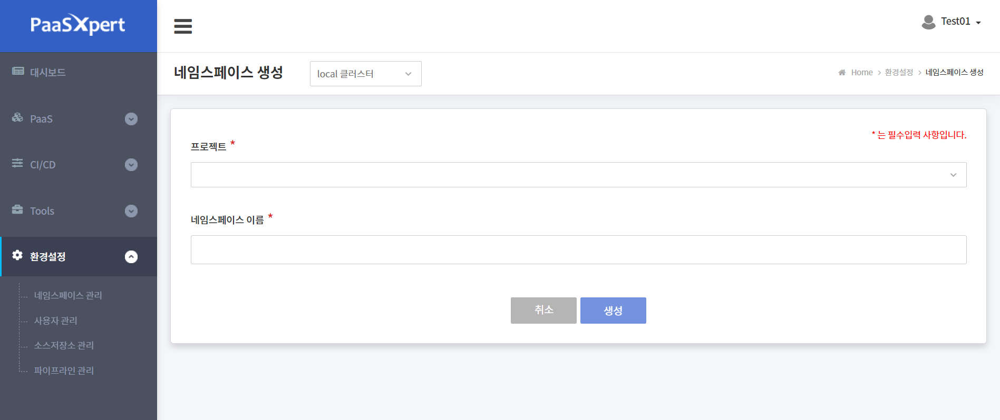

ADMIN 사용자 가이드
- ADMIN 권한을 가진 사용자가 PaaSXpert 를 사용하는 방법을 설명한다.
1. 사용자 관리
- PaaSXpert 에 접속하는 사용자 관리를 위해 사용자 등록, 사용자 정보 수정,
사용자 권한 설정을 하는 방법을 설명한다.
1.1. 사용자 생성
-
사용자 계정을 생성하는 방법을 설명한다.
사용자 계정 생성은 ADMIN 권한을 갖고 있는 사용자만 할 수 있다. -
Manager 권한 사용자 생성하기
1. 환경설정 > 사용자 관리 메뉴를 클릭한다.

2. 사용자 관리 화면에서 사용자 생성을 위해 화면 우측에 위치한
사용자 등록 버튼을 클릭한다.
3. 사용자 추가 화면에서 생성할 사용자의 사용자 ID, 이메일, 이름, 포털 권한, 초기 비밀번호 항목에
값을 입력한다. 포털 권한은 드롭 다운 목록에서 MANAGER 권한을 선택한다.
4. 입력을 완료하면 등록 버튼을 클릭하여 작업을 완료한다.

| 항목 | 설 명 | 제약사항 |
|---|---|---|
| 사용자 ID | 로그인 시 사용할 사용자 ID (필수 값) | - 중복 허용 안됨 - 영문 대소문자만 가능 - 20자 이하 |
| 이메일 | 이메일 주소 (필수 값) | 중복 허용 안됨 |
| 이름 | 사용자 이름 (필수 값) | |
| 포털 권한 | 상세 내용은 (PaaSXpert 사용자 권한)을 참조 - ADMIN - MANAGER - USER - DEPLOY |
|
| 초기 비밀번호 | 로그인 시 사용할 비밀번호 (필수 값) - 최초 접속하기 위한 임시 비밀번호 - 최초 로그인 시 필수 변경해야 함 |
대소문자 구분하여 숫자, 특수문자 조합, 8자 이상 |
- USER 권한 사용자 생성
1. 환경설정 > 사용자 관리 메뉴를 클릭한다.
2. 사용자 생성을 위해 화면 우측에 위치한 사용자 등록 버튼을 클릭한다.
3. 사용자 추가 화면에서 생성할 사용자의 사용자 ID, 이메일, 이름, 포털 권한,
초기 비밀번호 항목에 값을 입력한다. 포털 권한은 드롭 다운 목록에서
USER 권한을 선택한다.
4. 입력을 완료하면 등록 버튼을 클릭하여 작업을 완료한다.
- DEPLOY 권한 사용자 생성
1. 환경설정 > 사용자 관리 메뉴를 클릭한다.
2. 사용자 생성을 위해 화면 우측에 위치한 사용자 등록 버튼을 클릭한다.
3. 사용자 추가 화면에서 생성할 사용자의 사용자 ID, 이메일, 이름, 포털 권한,
초기 비밀번호 항목에 값을 입력한다. 포털 권한은 드롭 다운 목록에서
DEPLOY 권한을 선택한다.
4. 입력을 완료하면 등록 버튼을 클릭하여 작업을 완료한다.
1.2. 사용자 조회
- 관리자가 사용자 목록을 조회하는 방법을 설명한다.

1. 환경 설정 > 사용자 관리 메뉴를 클릭한다.
2. 조회 조건에서 선택한 권한에 따라 사용자 목록을 조회한다.
3. 찾고자 하는 user name 으로 사용자 목록을 조회한다.
| 항목 | 설명 | 비고 |
|---|---|---|
| 사용자 ID | 로그인 시 사용하는 사용자 ID | |
| 이름 | 사용자 이름 | |
| 이메일 | 이메일 주소 | |
| 로그인 허용 | 로그인 허용 여부 - Yes: 로그인 가능 - No: 로그인 불가 |
|
| 생성 일자 | 사용자 등록 일자 |
1.3. 사용자 정보 수정
-
관리자가 사용자 정보를 수정하는 방법을 설명한다.
-
사용자 정보 수정

1. 환경설정 > 사용자 관리 메뉴를 클릭한다.
2. 조회 조건에서 권한을 선택하여 사용자 목록을 조회한다.
3. 사용자 ID 를 클릭하여 사용자 상세 화면으로 이동한다.
4. 이메일, 이름, 로그인 허용여부 중 원하는 항목을 수정한다.
5. 사용자 정보 수정 버튼을 클릭하여 작업을 완료한다.
-
사용자 비밀번호 초기화
1. 환경설정 > 사용자 관리 메뉴를 클릭한다.
2. 조회 조건에서 권한을 선택하여 사용자 목록을 조회한다.
3. 비밀번호 초기화 버튼을 클릭 한다.

4. 사용자 비밀번호 초기화 페이지로 이동하게 되며 초기 비밀번호를 재설정 하게 된다.
1.4. 사용자 포털 권한 수정
- 관리자가 사용자의 포털 권한을 수정하는 방법을 설명한다.

1. 환경설정 > 사용자 관리 메뉴를 클릭한다.
2. 조회 조건에서 권한을 선택하여 사용자 목록을 조회한다.
3. 사용자 ID 를 클릭하여 사용자 상세 화면을 이동한다.
4. 사용자 상세 화면에서 포털 권한 탭을 클릭한다.
5. 현재 포털 권한을 확인하고 변경********할 포털 권한 목록에서 권한을 선택한다.
6. 포탈 권한 수정 버튼을 클릭하여 작업을 완료한다.
| 항목 | 설 명 | 비고 |
|---|---|---|
| 변경할 포털 권한 | - ADMIN (관리자 권한) - MANAGER (책임자 권한) - USER (개발자 권한) - DEPLOY (배포 담당 권한) |
1.5. 사용자 클러스터 권한 수정
-
관리자가 사용자의 클러스터 권한을 수정하는 방법을 설명한다.
MANAGER 사용자와 USER 사용자 각각에 대해 클러스터 권한을 수정한다. -
클러스터 권한은 포털 권한과 별개로 PaaS 를 상세 관리할 수 있는 Rancher 솔루션의
사용 권한을 부여하는 기능 이며, 클러스터/네임스페이스 별 권한을 부여할 때 포털
권한과 동일한 권한을 부여한다. -
클러스터 권한을 설정하지 않으면 PaaSXert 포털 로그인만 가능하며 대부분의 기능을
사용할 수 없게 된다.

1. 환경설정 > 사용자 관리 메뉴를 클릭한다.
2. 조회 조건에서 권한을 선택하여 사용자 목록을 조회한다.
3. 사용자 ID 를 클릭하여 사용자 상세 화면으로 이동한다.
4. 사용자 상세 화면에서 클러스터 권한 탭을 클릭한다.
5. PaaS 클러스터 드롭 다운 목록에서 클러스터를 선택한다.
| 항목 | 설명 | 비고 |
|---|---|---|
| PaaS 클러스터 | PaaS 클러스터 목록 |
6. 프로젝트(네임스페이스) 드롭 다운 목록에서 프로젝트를 선택한다.
| 항목 | 설 명 | 비고 |
|---|---|---|
| 프로젝트(네임스페이스) | PaaS 클러스터 목록을 선택하면 표시되며, 클러스터 하위 프로젝트가 조회 된다. - 개발 영역 배포를 위한 개발 프로젝트(네임스페이스) 필요 - 운영 영역 배포를 위한 운영 프로젝트(네임스페이스) 필요 |
7. 권한 드롭 다운 목록에서 권한을 선택한다.
- 포털 권한이 MANAGER 일 경우는 클러스터 권한을 MANAGER 로 선택한다.
- 포털 권한이 USER 일 경우는 클러스터 권한을 USER 로 선택한다.
| 항목 | 설명 | 비고 |
|---|---|---|
| 권한 | - ADMIN (관리자 권한) - MANAGER(책임자 권한) - USER (개발자 권한) - DEPLOY(배포 담당자 권한) |
8. PaaS 클러스터에는 여러 프로젝트(네임스페이스)를 할당할 수 있으며
- 여러 프로젝트 별 권한을 부여할 경우에는 + 버튼을 눌러 각각 권한을 부여할 수 있다.
9. 기존 부여한 권한을 삭제할 경웨는 - 버튼을 클릭한다.
10. 클러스터 권한 수정 버튼을 클릭하여 작업을 완료한다.
Note: 프로젝트 별 권한은 1개씩만 부여가 가능하기 때문에 기존 프로젝트의 권한을
수정할 경우 + 버튼으로 기존 클러스터와 프로젝트를 선택 후 클러스터
권한만 변경 후 추가하면 수정할 수 있다.
2. 네임스페이스 생성
- 네임스페이스 생성하는 방법을 설명한다. 네임스페이스 생성은 ADMIN 권한을 갖고 있는 사용
자 만 할 수 있다.

1. 환경 설정 > 네임스페이스 관리 메뉴를 클릭한다.
2. 네임스페이스 생성 메뉴를 클릭한다.
3. 프로젝트를 선택하고, 네임스페이스 이름을 입력 후 생성 버튼을 누른다.

| 항목 | 설 명 | 제약사항 |
|---|---|---|
| 프로젝트 | 사용자 별 권한이 있는 프로젝트가 조회되며 네임스페이스를 생성할 프로젝트를 선택한다. | |
| 네임스페이스 이름 | 네임스페이스 이름을 입력한다. | 앞글자는 영문으로 시작해야 하며, 숫자 및 특수문자 '-'만 입력 가능하다. |